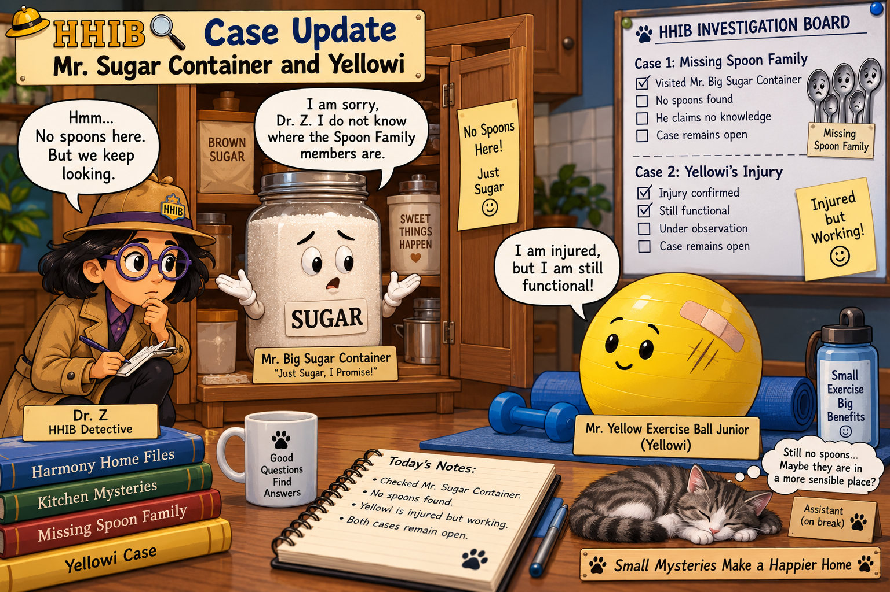

Episode 8: Two Cases Still Remain Open
Harmony Home was quiet.
Perhaps a little too quiet.
But Dr. Z was still investigating the mysterious disappearance of several members of the Spoon Family.
There had been searches.
There had been questions.
There had even been theories.

But the missing spoons had not been found.
Yesterday, the investigation reached a new location:
Mr. Big Sugar Container’s apartment.
Dr. Z opened the apartment carefully.
Mr. Big Sugar Container was standing exactly where he was supposed to be.
“Good morning, Mr. Big Sugar Container,” said Dr. Z.
“Good morning, Dr. Z,” he replied politely.
Dr. Z came directly to the point.
“Do you know anything about the whereabouts of the missing Spoon Family members?”
Mr. Big Sugar Container looked surprised.
“The Spoon Family?”
“Yes.”
“I am afraid I know nothing about their whereabouts.”
Dr. Z looked inside his apartment.
Sugar.
More sugar.
And still more sugar.
But no Spoon Family members.
Mr. Big Sugar Container had told the truth — at least as far as the search could determine.
The Spoon Family case remained unsolved.
But Harmony Home now had another case.
A few days earlier, a new resident had arrived.
His formal name was Mr. Yellow Exercise Ball Junior.
Everyone could simply call him Yellowi.
Yellowi had an important job at Harmony Home.
Unfortunately, only a few days after his arrival, Yellowi suffered an injury.
Dr. Z examined him.
“Yellowi, can you still work?”
Yellowi stood bravely at his post.
“Of course I can.”
And he could.
The injury had not stopped him from doing his job.
“Occupational hazard,” Yellowi explained.
Dr. Z nodded.
That seemed reasonable.
Harmony Home therefore ended the day with two open case files.
Case File 1: The missing Spoon Family members.
Status: Mr. Big Sugar Container’s apartment searched. No spoons found.
Case File 2: The injury of Mr. Yellow Exercise Ball Junior.
Status: Injured, but fully functional.
Somewhere in Harmony Home, the missing Spoon Family members were still waiting to be discovered.
And somewhere nearby, Yellowi continued working as if nothing had happened.
Dr. Z closed her notebook.
For now.
Both cases remain open.